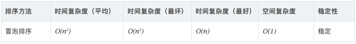
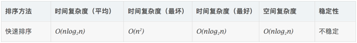
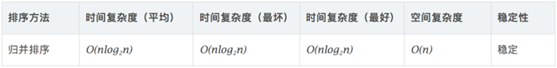
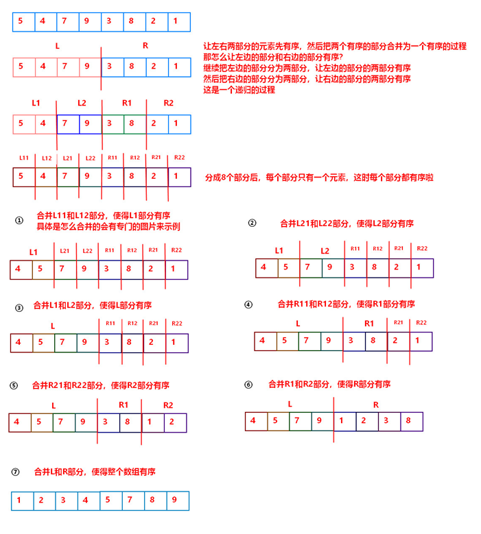
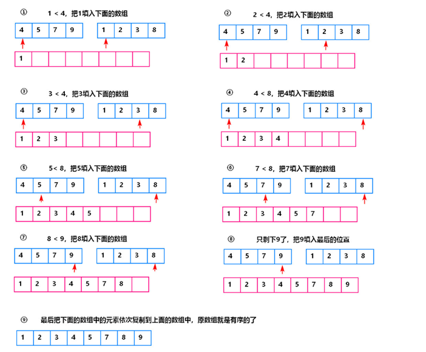

第2章 手写代码¶
2.1 冒泡排序（Bubble Sort）¶
算法描述：
l 比较相邻的元素。如果第一个比第二个大，就交换它们两个；
l 对每一对相邻元素作同样的工作，从开始第一对到结尾的最后一对，这样在最后的元素应该会是最大的数；
l 针对所有的元素重复以上的步骤，除了最后一个；
l 重复步骤1~3，直到排序完成。

如果两个元素相等，不会再交换位置，所以冒泡排序是一种稳定排序算法。
代码实现：
1. package com.atguigu.interview.chapter02;
2.
3. /**
4. * @author helen
5. * @since 2019/7/22
6. * 冒泡排序
7. */
8. public class BubbleSort {
9.
10. /**
11. * @param data 被排序的数组
12. */
13. public static void bubbleSort(int[] data) {
14.
15. int arrayLength = data.length;
16.
17. for (int i = 1; i < arrayLength; i++) {//第i次排序
18.
19. for (int j = 0; j < arrayLength - i; j++) {//从索引为j的数开始
20. if (data[j] > data[j + 1]) { //相邻元素两两对比
21. int temp = data[j + 1]; // 元素交换
22. data[j + 1] = data[j];
23. data[j] = temp;
24. }
25. }
26.
27. System.out.println("第" + i + "次排序：\n" + java.util.Arrays.toString(data));
28. }
29. }
30.
31. public static void main(String[] args) {
32.
33. int[] data = {3, 44, 38, 5, 47, 15, 36, 26, 27, 2, 46, 4, 19, 50, 48};
34.
35. System.out.println("排序之前：\n" + java.util.Arrays.toString(data));
36.
37. bubbleSort(data);
38.
39. System.out.println("排序之后：\n" + java.util.Arrays.toString(data));
40. }
41. }
2.2快速排序（Quick Sort）¶
算法描述：
使用分治法来把一个串（list）分为两个子串（sub-lists）。具体算法描述如下：
l 从数列中挑出一个元素，称为“基准”（pivot）；
l 重新排序数列，所有元素比基准值小的摆放在基准前面，所有元素比基准值大的摆在基准的后面（相同的数可以到任一边）。在这个分区退出之后，该基准就处于数列的中间位置。这个称为分区（partition）操作；
l 递归地（recursive）把小于基准值元素的子数列和大于基准值元素的子数列排序。

key值的选取可以有多种形式，例如中间数或者随机数，分别会对算法的复杂度产生不同的影响。
代码实现：
1. package com.atguigu.interview.chapter02;
2.
3. /**
4. * @author helen
5. * @since 2019/7/22
6. * 快速排序
7. */
8. public class QuickSort {
9.
10. public static void quickSort(int[] data, int low, int high) {
11. int i, j, temp, t;
12. if (low > high) {
13. return;
14. }
15. i = low;
16. j = high;
17. //temp就是基准位
18. temp = data[low];
19. System.out.println("基准位：" + temp);
20.
21. while (i < j) {
22. //先看右边，依次往左递减
23. while (temp <= data[j] && i < j) {
24. j--;
25. }
26. //再看左边，依次往右递增
27. while (temp >= data[i] && i < j) {
28. i++;
29. }
30. //如果满足条件则交换
31. if (i < j) {
32. System.out.println("交换：" + data[i] + "和" + data[j]);
33. t = data[j];
34. data[j] = data[i];
35. data[i] = t;
36. System.out.println(java.util.Arrays.toString(data));
37.
38. }
39. }
40. //最后将基准位与i和j相等位置的数字交换
41. System.out.println("基准位" + temp + "和i、j相遇的位置" + data[i] + "交换");
42. data[low] = data[i];
43. data[i] = temp;
44. System.out.println(java.util.Arrays.toString(data));
45.
46. //递归调用左半数组
47. quickSort(data, low, j - 1);
48. //递归调用右半数组
49. quickSort(data, j + 1, high);
50. }
51.
52.
53. public static void main(String[] args) {
54.
55. int[] data = {3, 44, 38, 5, 47, 15, 36, 26, 27, 2, 46, 4, 19, 50, 48};
56.
57. System.out.println("排序之前：\n" + java.util.Arrays.toString(data));
58.
59. quickSort(data, 0, data.length - 1);
60.
61. System.out.println("排序之后：\n" + java.util.Arrays.toString(data));
62. }
63. }
快速排序详细参考：
https://blog.csdn.net/shujuelin/article/details/82423852
2.3 归并排序（Merge Sort）¶
算法描述：
l 把长度为n的输入序列分成两个长度为n/2的子序列；
l 对这两个子序列分别采用归并排序；
l 将两个排序好的子序列合并成一个最终的排序序列。

（1）归并排序的流程

（2）合并两个有序数组的流程

代码实现：
1. package com.atguigu.interview.chapter02;
2.
3. /**
4. * @author helen
5. * @since 2019/7/22
6. */
7. public class MergeSort {
8.
9. public static void mergeSort(int[] data) {
10. sort(data, 0, data.length - 1);
11. }
12.
13. public static void sort(int[] arr, int l, int r) {
14. if(l == r) {
15. return;
16. }
17. int mid = l + ((r - l) >> 1);
18. sort(arr, l, mid);
19. sort(arr, mid + 1, r);
20. merge(arr, l, mid, r);
21. }
22.
23. public static void merge(int[] arr, int l, int mid, int r) {
24. int[] temp = new int[r - l + 1];
25. int i = 0;
26. int p1 = l;
27. int p2 = mid + 1;
28. // 比较左右两部分的元素，哪个小，把那个元素填入temp中
29. while(p1 <= mid && p2 <= r) {
30. temp[i++] = arr[p1] < arr[p2] ? arr[p1++] : arr[p2++];
31. }
32. // 上面的循环退出后，把剩余的元素依次填入到temp中
33. // 以下两个while只有一个会执行
34. while(p1 <= mid) {
35. temp[i++] = arr[p1++];
36. }
37. while(p2 <= r) {
38. temp[i++] = arr[p2++];
39. }
40. // 把最终的排序的结果复制给原数组
41. for(i = 0; i < temp.length; i++) {
42. arr[l + i] = temp[i];
43. }
44. }
45.
46. public static void main(String[] args) {
47.
48. int[] data = {3, 44, 38, 5, 47, 15, 36, 26, 27, 2, 46, 4, 19, 50, 48};
49.
50. System.out.println("排序之前：\n" + java.util.Arrays.toString(data));
51.
52. mergeSort(data);
53.
54. System.out.println("排序之后：\n" + java.util.Arrays.toString(data));
55. }
56. }
2.4 二分查找（Binary Search）¶
算法描述：
l 二分查找也称折半查找，它是一种效率较高的查找方法，要求列表中的元素首先要进行有序排列。
l 首先，假设表中元素是按升序排列，将表中间位置记录的关键字与查找关键字比较，如果两者相等，则查找成功；
l 否则利用中间位置记录将表分成前、后两个子表，如果中间位置记录的关键字大于查找关键字，则进一步查找前一子表，否则进一步查找后一子表。
l 重复以上过程，直到找到满足条件的记录，使查找成功，或直到子表不存在为止，此时查找不成功。
代码实现：
1. package com.atguigu.interview.chapter02;
2.
3. /**
4. * @author Helen
5. * @since 2019/7/22
6. */
7. public class BinarySearch {
8.
9.
10. /**
11. * 二分查找 时间复杂度O(log2n);空间复杂度O(1)
12. *
13. * @param arr 被查找的数组
14. * @param left
15. * @param right
16. * @param findVal
17. * @return 返回元素的索引
18. */
19. public static int binarySearch(int[] arr, int left, int right, int findVal) {
20.
21. if (left > right) {//递归退出条件，找不到，返回-1
22. return -1;
23. }
24.
25. int midIndex = (left + right) / 2;
26.
27. if (findVal < arr[midIndex]) {//向左递归查找
28. return binarySearch(arr, left, midIndex, findVal);
29. } else if (findVal > arr[midIndex]) {//向右递归查找
30. return binarySearch(arr, midIndex, right, findVal);
31. } else {
32. return midIndex;
33. }
34. }
35.
36. public static void main(String[] args){
37.
38. //注意：需要对已排序的数组进行二分查找
39. int[] data = {-49, -30, -16, 9, 21, 21, 23, 30, 30};
40. int i = binarySearch(data, 0, data.length, 21);
41. System.out.println(i);
42. }
43. }
拓展需求：
当一个有序数组中，有多个相同的数值时，如何将所有的数值都查找到。
代码实现：
1. package com.atguigu.interview.chapter02;
2.
3. import java.util.ArrayList;
4. import java.util.List;
5.
6. /**
7. * @author Helen
8. * @since 2019/7/22
9. */
10. public class BinarySearch2 {
11.
12. /**
13. * {1, 8, 10, 89, 1000, 1000, 1234}
14. * 一个有序数组中，有多个相同的数值，如何将所有的数值都查找到，比如这里的 1000.
15. * 分析：
16. * 1. 返回的结果是一个列表 list
17. * 2. 在找到结果时，向左边扫描，向右边扫描 [条件]
18. * 3. 找到结果后，就加入到ArrayBuffer
19. *
20. * @return
21. */
22. public static List<Integer> binarySearch2(int[] arr, int left, int right, int findVal) {
23.
24. //找不到条件?
25. List<Integer> list = new ArrayList<>();
26.
27. if (left > right) {//递归退出条件，找不到，返回-1
28. return list;
29. }
30.
31. int midIndex = (left + right) / 2;
32. int midVal = arr[midIndex];
33. if (findVal < midVal) {//向左递归查找
34. return binarySearch2(arr, left, midIndex - 1, findVal);
35. } else if (findVal > midVal) { //向右递归查找
36. return binarySearch2(arr, midIndex + 1, right, findVal);
37. } else {
38. System.out.println("midIndex=" + midIndex);
39.
40. //向左边扫描
41. int temp = midIndex - 1;
42. while (true) {
43. if (temp < 0 || arr[temp] != findVal) {
44. break;
45. }
46. if (arr[temp] == findVal) {
47. list.add(temp);
48. }
49. temp -= 1;
50. }
51.
52. //将中间这个索引加入
53. list.add(midIndex);
54.
55. //向右边扫描
56. temp = midIndex + 1;
57. while (true) {
58. if (temp > arr.length - 1 || arr[temp] != findVal) {
59. break;
60. }
61. if (arr[temp] == findVal) {
62. list.add(temp);
63. }
64. temp += 1;
65. }
66. return list;
67. }
68. }
69.
70. public static void main(String[] args){
71.
72. //注意：需要对已排序的数组进行二分查找
73. int[] data = {1, 8, 10, 89, 1000, 1000, 1234};
74. List<Integer> list = binarySearch2(data, 0, data.length, 1000);
75. System.out.println(list);
76. }
77. }
2.5 单例模式（Binary Search）¶
2.5.1单例模式定义¶
单例模式确保某个类只有一个实例，而且自行实例化并向整个系统提供这个实例。在计算机系统中，线程池、缓存、日志对象、对话框、打印机、显卡的驱动程序对象常被设计成单例。这些应用都或多或少具有资源管理器的功能。每台计算机可以有若干个打印机，但只能有一个Printer Spooler，以避免两个打印作业同时输出到打印机中。每台计算机可以有若干通信端口，系统应当集中管理这些通信端口，以避免一个通信端口同时被两个请求同时调用。总之，选择单例模式就是为了避免不一致状态。
2.5.2 单例模式的特点¶
l 单例类只能有一个实例。
l 单例类必须自己创建自己的唯一实例。
l 单例类必须给所有其他对象提供这一实例。
单例模式保证了全局对象的唯一性，比如系统启动读取配置文件就需要单例保证配置的一致性。
2.5.3 单例的四大原则¶
l 构造私有
l 以静态方法或者枚举返回实例
l 确保实例只有一个，尤其是多线程环境
l 确保反序列换时不会重新构建对象
2.5.4 实现单例模式的方式¶
（1）饿汉式（立即加载）：
饿汉式单例在类加载初始化时就创建好一个静态的对象供外部使用，除非系统重启，这个对象不会改变，所以本身就是线程安全的。
Singleton通过将构造方法限定为private避免了类在外部被实例化，在同一个虚拟机范围内，Singleton的唯一实例只能通过getInstance()方法访问。（事实上，通过Java反射机制是能够实例化构造方法为private的类的，会使Java单例实现失效）
1. package com.atguigu.interview.chapter02;
2.
3. /**
4. * @author helen
5. * @since 2019/7/22
6. *
7. * 饿汉式（立即加载）
8. */
9. public class Singleton1 {
10.
11. /**
12. * 私有构造
13. */
14. private Singleton1() {
15. System.out.println("构造函数Singleton1");
16. }
17.
18. /**
19. * 初始值为实例对象
20. */
21. private static Singleton1 single = new Singleton1();
22.
23. /**
24. * 静态工厂方法
25. * @return 单例对象
26. */
27. public static Singleton1 getInstance() {
28. System.out.println("getInstance");
29. return single;
30. }
31.
32. public static void main(String[] args){
33. System.out.println("初始化");
34. Singleton1 instance = Singleton1.getInstance();
35. }
36. }
（2）懒汉式（延迟加载）：
该示例虽然用延迟加载方式实现了懒汉式单例，但在多线程环境下会产生多个Singleton对象
1. package com.atguigu.interview.chapter02;
2.
3. /**
4. * @author helen
5. * @since 2019/7/22
6. *
7. * 懒汉式（延迟加载）
8. */
9. public class Singleton2 {
10.
11. /**
12. * 私有构造
13. */
14. private Singleton2() {
15. System.out.println("构造函数Singleton2");
16. }
17.
18. /**
19. * 初始值为null
20. */
21. private static Singleton2 single = null;
22.
23. /**
24. * 静态工厂方法
25. * @return 单例对象
26. */
27. public static Singleton2 getInstance() {
28. if(single == null){
29. System.out.println("getInstance");
30. single = new Singleton2();
31. }
32. return single;
33. }
34.
35. public static void main(String[] args){
36.
37. System.out.println("初始化");
38. Singleton2 instance = Singleton2.getInstance();
39. }
40. }
（3）同步锁（解决线程安全问题）：
在方法上加synchronized同步锁或是用同步代码块对类加同步锁，此种方式虽然解决了多个实例对象问题，但是该方式运行效率却很低下，下一个线程想要获取对象，就必须等待上一个线程释放锁之后，才可以继续运行。
1. package com.atguigu.interview.chapter02;
2.
3. /**
4. * @author helen
5. * @since 2019/7/22
6. *
7. * 同步锁（解决线程安全问题）
8. */
9. public class Singleton3 {
10.
11. /**
12. * 私有构造
13. */
14. private Singleton3() {}
15.
16. /**
17. * 初始值为null
18. */
19. private static Singleton3 single = null;
20.
21. public static Singleton3 getInstance() {
22.
23. // 等同于 synchronized public static Singleton3 getInstance()
24. synchronized(Singleton3.class){
25. // 注意：里面的判断是一定要加的，否则出现线程安全问题
26. if(single == null){
27. single = new Singleton3();
28. }
29. }
30. return single;
31. }
32. }
（4）双重检查锁（提高同步锁的效率）：
使用双重检查锁进一步做了优化，可以避免整个方法被锁，只对需要锁的代码部分加锁，可以提高执行效率。
1. package com.atguigu.interview.chapter02;
2.
3. /**
4. * @author helen
5. * @since 2019/7/22
6. * 双重检查锁（提高同步锁的效率）
7. */
8. public class Singleton4 {
9.
10. /**
11. * 私有构造
12. */
13. private Singleton4() {}
14.
15. /**
16. * 初始值为null
17. */
18. private static Singleton4 single = null;
19.
20. /**
21. * 双重检查锁
22. * @return 单例对象
23. */
24. public static Singleton4 getInstance() {
25. if (single == null) {
26. synchronized (Singleton4.class) {
27. if (single == null) {
28. single = new Singleton4();
29. }
30. }
31. }
32. return single;
33. }
34. }
（5）静态内部类：
这种方式引入了一个内部静态类（static class），静态内部类只有在调用时才会加载，它保证了Singleton 实例的延迟初始化，又保证了实例的唯一性。它把singleton 的实例化操作放到一个静态内部类中，在第一次调用getInstance() 方法时，JVM才会去加载InnerObject类，同时初始化singleton 实例，所以能让getInstance() 方法线程安全。
特点是：即能延迟加载，也能保证线程安全。
静态内部类虽然保证了单例在多线程并发下的线程安全性，但是在遇到序列化对象时，默认的方式运行得到的结果就是多例的。
1. package com.atguigu.interview.chapter02;
2.
3. /**
4. * @author helen
5. * @since 2019/7/22
6. *
7. * 静态内部类（延迟加载，线程安全）
8. */
9. public class Singleton5 {
10.
11. /**
12. * 私有构造
13. */
14. private Singleton5() {}
15.
16. /**
17. * 静态内部类
18. */
19. private static class InnerObject{
20. private static Singleton5 single = new Singleton5();
21. }
22.
23. public static Singleton5 getInstance() {
24. return InnerObject.single;
25. }
26. }
（6）内部枚举类实现（防止反射攻击）：
事实上，通过Java反射机制是能够实例化构造方法为private的类的。这也就是我们现在需要引入的枚举单例模式。
1. package com.atguigu.interview.chapter02;
2.
3. /**
4. * @author helen
5. * @since 2019/7/22
6. */
7. public class SingletonFactory {
8.
9. /**
10. * 内部枚举类
11. */
12. private enum EnumSingleton{
13. Singleton;
14. private Singleton6 singleton;
15.
16. //枚举类的构造方法在类加载是被实例化
17. private EnumSingleton(){
18. singleton = new Singleton6();
19. }
20. public Singleton6 getInstance(){
21. return singleton;
22. }
23. }
24.
25. public static Singleton6 getInstance() {
26. return EnumSingleton.Singleton.getInstance();
27. }
28. }
29.
30. class Singleton6 {
31. public Singleton6(){}
32. }
本文总阅读量次